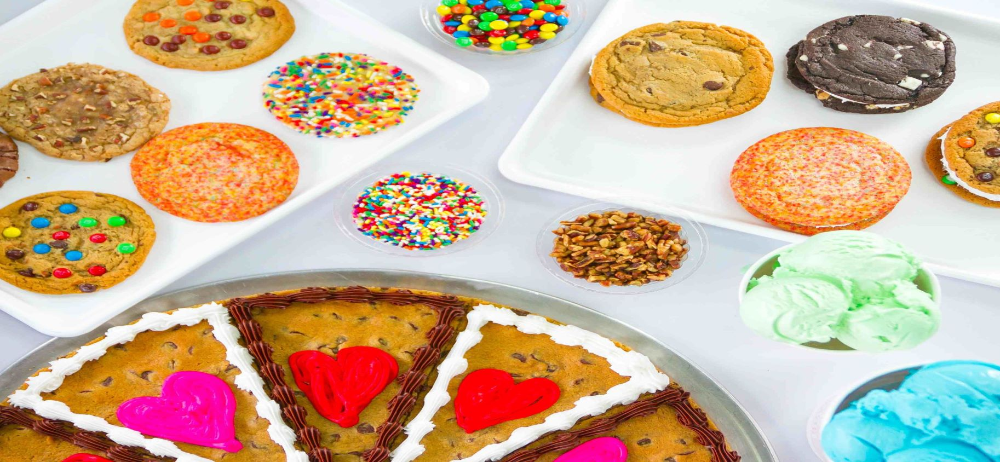

America’s Best Ice Cream MaggieMoo’s prize-winning ice cream first starts with the best ingredients to make the original ice cream in our treatery daily. We avoid using additives and preservatives to give you the best experience. Our brand is the only one to win five Blue Ribbon Awards from the National Ice Cream Retailer’s Association. Our ice cream and low fat yogurt are made fresh just for you! We have over 40 flavors and many fruits, candy or nut mix-ins to choose from. Who ever said you can’t it have it all, should call Maggie Moo’s.
Maggie Moo’s Premium Cakes Our beloved ice cream cakes are hand-crafted with love and perfection just for you! They are excellent for any event or special occasion. With mix-ins from yummy fruits, nuts, and the sweetest candies and most delicious cookies. To top it off we slather on a rich icing to have your taste bud watering.
America’ Best Cookies From generations of authentic recipes, Great American Cookies, set the expectation for delicious cookies and cookie cakes. All of our cookies and brownies are tested cautiously in a controlled production using nothing less than the finest ingredients. Our superior treats are handcrafted to perfection and baked with warm love.